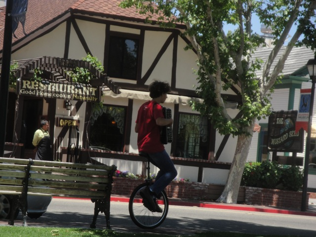
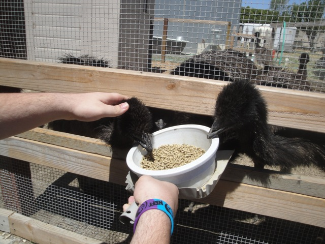
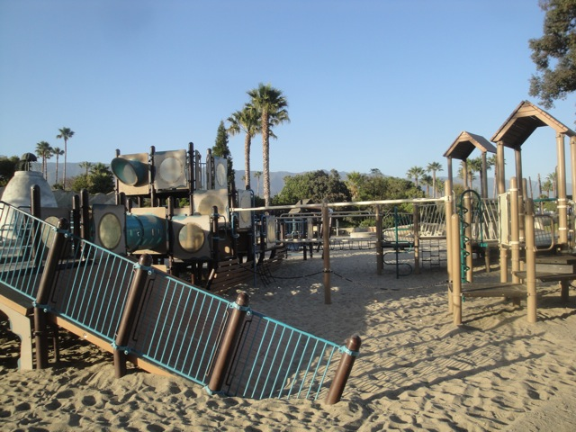

Solvang 2012
All right. For a day off, we just decided to head on up to Solvang. Because, hey!!! Why the hell not!!!
A week before I leave for real Europe, I had to visit fake Europe for preparation!!! =)
Check out my genius art!!!
This is the nicest looking Subway I have ever seen.

I'm in a fake European Town with Street Performers. All thats missing are the brick roads.
Thats enough Solvang. Lets head on over to Ostrich Land!!!
Hey there Emu. You ready to be petted by Jacob?
OMG!!! THERE ARE OSTRICHES AT OSTRICH LAND!!!
GIMME THE FOOD!!!!!

Yeah. We got to pet the Emus.
Emu Oil cures everything!!! It is Jesus Juice!!!
 If you're wondering what this is, this is indeed, the inside of a tree.
If you're wondering what this is, this is indeed, the inside of a tree.
My name is Kevin. I run this site and we're at...SQUIRREL!!!!!
You know, if it wasn't for the fact that its dried up, and even when its not, the waters still only one inch deep. But if the water was 20 ft deep here, this'd make a great cliff jumping spot.
Hey. Did I mention that dragonflys are deadly?
We were gonna ride the Carousel here today, but it was closed. =(
But thats ok. We had fun on this playground instead.

We had *WAY* too much fun on this playground.
Walking on the Santa Barbara Pier.
Urge to jump rising. Must suppress.
Home